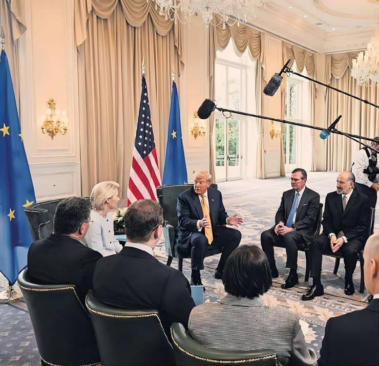
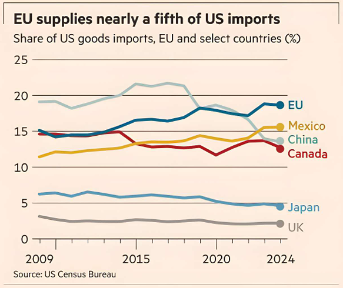

Acceptance of 15% baseline levy follows months of failure to follow through on retaliation threats
By Andy Bounds (Brussels), Henry Foy (Turnberry), Ben Hall (London)
In the face of Donald Trump’s trade blitz, the EU began its path to capitulation on April 10.
The sweeping “liberation day” tariffs the US president inflicted on most of the world earlier that month sent financial markets into a tailspin over recession fears. Trump blinked and on April 9 dropped the tariffs to 10 per cent, in what he said was a temporary measure.
But Brussels blinked too. On April 10, it suspended retaliatory tariffs and accepted the US offer of talks with a knife at its throat: 10 per cent tariffs on most of its trade, along with higher levies on steel, aluminium and vehicles. Rather than join Canada and China with instant retaliation, the EU chose compromise, hoping to secure a better deal.
Under the framework deal struck by European Commission president Ursula von der Leyen and Trump at his Turnberry golf resort on Sunday, the EU has swallowed a broad-based “baseline” US tariff of 15 per cent, including crucially for cars, but not for steel, which will be subject to a quota system.
Relief among policymakers about avoiding an immediate transatlantic trade war was tinged with regret: could the EU, the world’s largest trading bloc, have extracted better terms had it not pulled its punches early on?
“He’s the bully in the schoolyard and we didn’t join others in standing up to him,” said one diplomat. “Those who don’t hang together get hanged separately.”
Georg Riekeles, a former commission official who helped negotiate the UK’s exit from the bloc, said the EU’s recent threat to apply €93bn of retaliatory tariffs against US goods came too late.
“With the benefit of hindsight, the EU would have been better off answering the US vigorously in April in a one-two combo with China’s retaliation against the US tariff hikes, which left markets and Trump reeling,” said Riekeles of the European Policy Centre think-tank.
Trump views the EU as a parasite, feeding off the lucrative US market while closing its own through regulation and standards. The US president has said the union was “formed to screw the US” and “nastier than China”.
The EU’s response to his re-election was flat-footed. Months of planning beforehand by a dedicated team, which included senior trade officials led by another Brexit talks veteran Sabine Weyand and von der Leyen’s trade adviser, Tomas Baert, went up in smoke.
They drew up a three-point plan modelled on the approach taken in Trump’s first term: offer to reduce the near €200bn goods trade deficit by buying more liquefied natural gas, weapons, and agricultural products. Second, offer mutual tariff reductions on each other’s goods. If that failed, they would prepare retaliation and rely on a market response to a possible trade war, or increasing inflation in the US, to force Trump to back down.
But Trump by March had levied 25 per cent tariffs on steel, aluminium and cars. At a meeting in Luxembourg that month, many trade ministers were on the war path.
Germany, France and a few others pushed for the commission to consult on using its new “trade bazooka”, the anti-coercion instrument. Designed after Trump’s first term to counter trade policy being used to pressure governments over other matters, it would allow Brussels to bar US companies from public tenders, revoke intellectual property protection and restrict imports and exports.
However, it was not clear a majority of member states agreed with the move, diplomats said. Weyand told EU ambassadors to show “strategic patience”.
When the UK struck a trade deal with Washington in May, accepting Trump’s 10 per cent baseline tariff, it encouraged those EU member states seeking a settlement, especially Berlin. A severe tit-for-tat escalation between the US and China ended in partial détente, easing investor fears of global trade turmoil.
Italy’s Prime Minister Giorgia Meloni and German Chancellor Friedrich Merz for months held onto the EU’s early offer to drop all industrial tariffs if the US did the same, even though Washington had long made clear it wanted unilateral concessions. Berlin was preoccupied with obtaining a complicated “offset” scheme to provide tariff relief for European — in practice, German — car companies that manufactured and exported from the US.
While EU technocrats were boxing under Queensberry rules, Trump was in a New York street fight. Maros Sefcovié, the EU’s trade commissioner, was dispatched to Washington seven times to propose areas of agreement, deliver homilies on the importance of the transatlantic relationship, and promote Germany’s car offset scheme. In total, Sefcovié held more than 100 hours of talks with his US counterparts.
A deal for a permanent 10 per cent “reciprocal” tariff, hatched in July with US trade representative Jamieson Greer and commerce secretary Howard Lutnick, was flatly rejected by Trump, who instead threatened to raise levies on the EU to 30 per cent, rather than 20 per cent, from August.
His threats had worked before. The retaliatory package the EU paused in April had been reduced from €26bn to €21bn after lobbying by France, Ireland and Italy to ensure bourbon was removed from the list, after Trump threatened to hit European distillers. If everything member states requested had been removed, only €9bn of goods would have been left on the list, officials told the FT.
Over the months of talks, Sefcovié’s phone rang regularly with ministers urging caution. Simon Harris, trade minister of Ireland, wanted to save the country’s pharmaceutical, spirits and beef industry from any US counter-punch and let the world — not least the Americans — know with frequent social media posts.
Business leaders also called loudly for restraint, preferring to accept a cut to profit margins than risk punitive tariffs that would hit sales. A second package of retaliatory tariffs on the US was cut to €72bn before being approved on July 24 to be used if talks collapsed, bringing the total to €93bn.
The months-long uncertainty over the direction of negotiations has also exposed divisions inside the commission itself. Weyand, whose hardball approach to Brexit often outfoxed her UK counterparts, argued for a stronger stance towards Trump and the use of the EU’s retaliation tools, in opposition to the more dovish von der Leyen, multiple diplomats and officials told the FT.
The French government, notwithstanding its attempts to shield its businesses from retaliation, also repeatedly called for a more muscular approach. But the commission president and her aides argued the potential damage from additional Trump measures — including threats to impose tariffs on sectors such as EU pharmaceuticals — meant the risk of a spiralling trade war was too great.
There was also concern a more confrontational stance towards Washington could spill over into other areas. Europe’s dependency on America’s security guarantee was a further argument against trade confrontation, especially for the bloc’s eastern and northern members. Fears that Trump would cut off weapons supplies to Ukraine, pull troops out of Europe or even quit Nato overshadowed the talks, diplomats said.
A further priority for the commission president was to preserve the EU’s right to regulate. The US tech industry has pushed hard for Trump to pressure the EU to weaken laws regulating online speech and data management. They also opposed national digital taxes. So far, von der Leyen has refused to compromise on those issues.
“Some in the commission’s trade directorate viewed this as a classical trade dispute and were pushing for retaliation, but von der Leyen had to consider the bigger picture which drove her caution and risk aversion,” said Mujtaba Rahman, Europe managing director at Eurasia Group, the risk consultancy.
After Trump rebuffed the deal hatched by his own officials, the commission’s negotiating team concluded they had no option but to accept a US tariff of 15 per cent. They pitched the number to member state ambassadors this week.
Officials will try to present it as a status quo deal, since the 15 per cent theoretically includes the pre-existing average US tariff of 4.8 per cent. But on a trade-weighted basis, the pre-existing US tariff on imports from the EU was only 1.6 per cent. There was no hiding the fact that the EU was rolled over by the Trump juggernaut, said one ambassador. “Trump worked out exactly where our pain threshold is.”
Arno Antlitz see Opinion
Tuesday 29 July 2025
End of Article